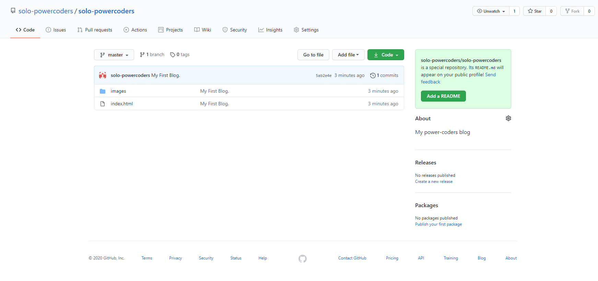
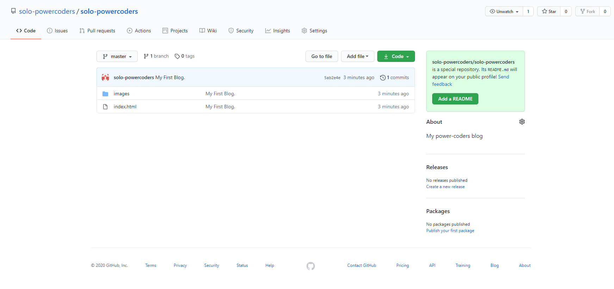

Day 1 - 10.08.2020
Today I set my computer up. I installed Visual Studio Code.

Day 2 - 11.08.2020
Today I learned about how to set up a blog using Github Pages.

Day 3 - 12.08.2020
Today I reviewed some HTML code from the course I started in 2019.

Day 4 - 13.08.2020
Today I started the "AWS Fundamentals-Going cloud native" course
and finished first week topics- Introduction, Infrastructure, and Compute.

Day 5 - 14.08.2020
Today I created my github page and repository.
Fruthermore, I wrote the html code and added to my repository.
 

Day 6 - 16.08.2020
I have learned the "AWS Fundamentals- Going cloud native" course
and finished second week topics- Networking and Storage.
Day 7 - 17.08.2020
Today I have reviewed and finished HTML topics
from coursera online course, "HTML, CSS, Javascript- for Web Developer".
Day 8 - 18.08.2020
I continue to learn the "AWS Fundamentals- Going cloud native" course
and finished third weeek topic- Databases.
Day 9- 19.08.2020
I prepared my CV and submitted. Furthermore I have learned
and finished the "AWS Fundamentals- Going cloud native" course
and fourth topic- Monitoring and Scaling Our Application.